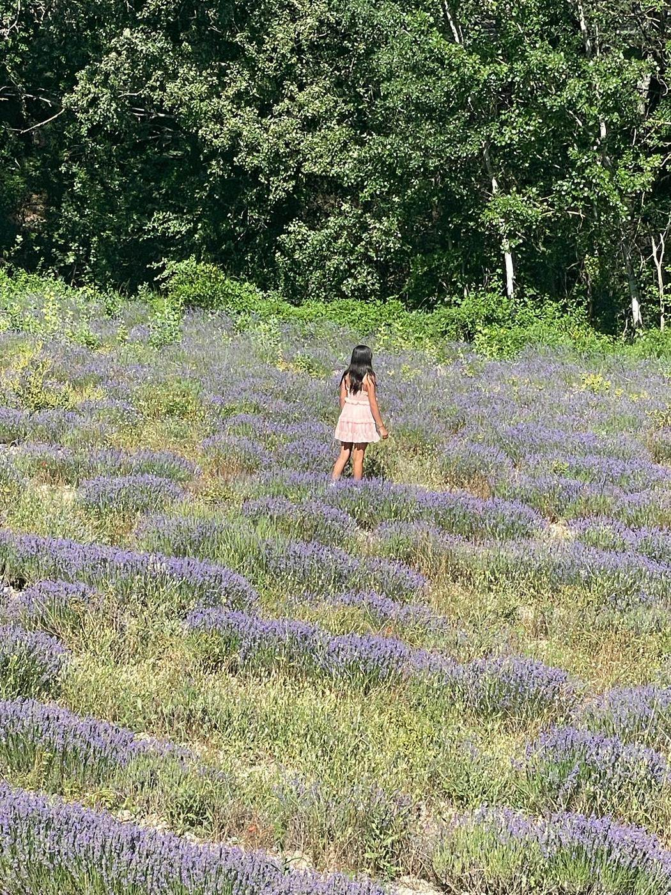
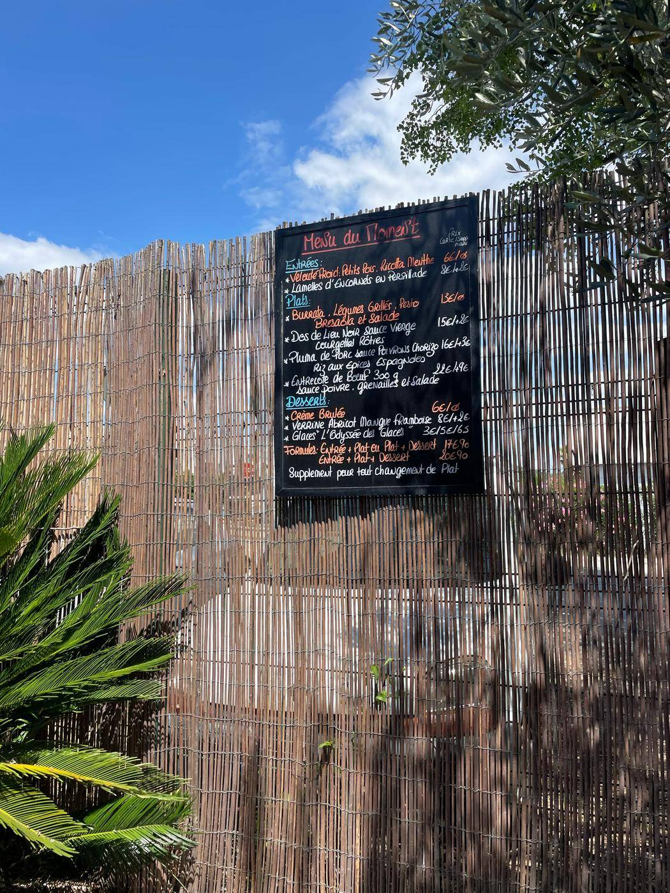
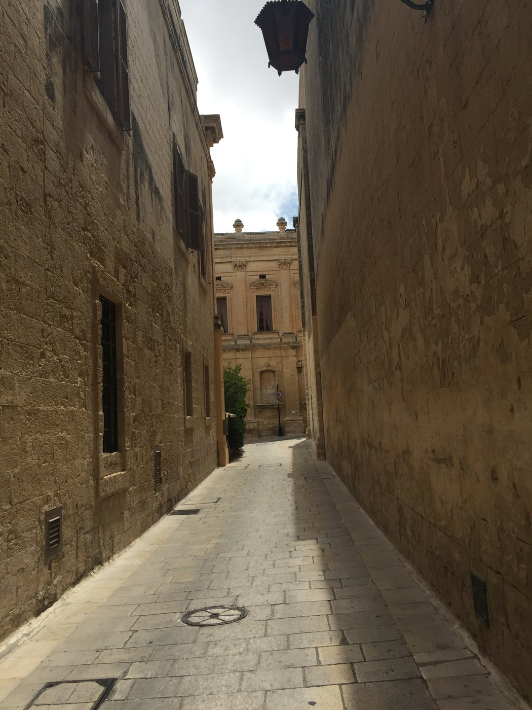
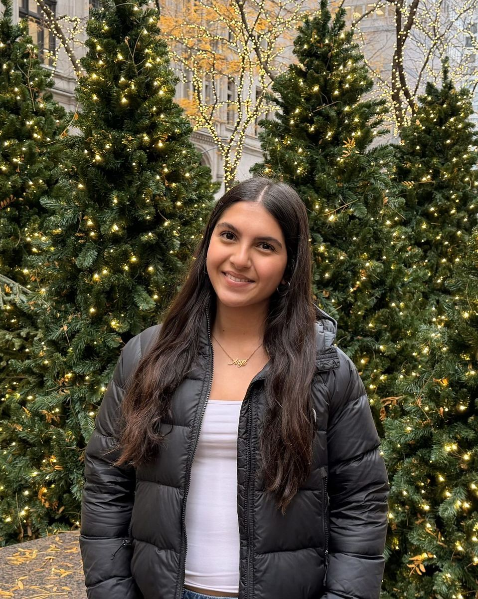

100 Voices. 7 Regions.
Mirror Project is a global collection of 100 interviews with young people across seven regions by Anya Zenooz. That work led to Reflections, a documentary exploring culture, stereotypes, and human connection.


Regions
Tap a globe to open that region’s interviews, facts, and photos.
Behind the Scenes
Prep and on the road: stills from travel days, streets, and food along the way, plus short clips from the journey.







Travel Blog
Featured place

Anya Zenooz
Anya Zenooz is a junior at Alpha School in Austin, TX, and a student filmmaker and author. She is the founder of Mirror Project.
Anya is particularly interested in the evolving role of social media and its profound influence on teen self-perception and social narratives. This focus extends to her writing; she is the author of Myth Busters: What They Don’t Teach You At School, a book helping middle schoolers navigate misinformation.
Outside of her media projects, Anya is a student leader active in Model UN and Mock Trial, serves as co-captain of her school’s dance team, and is the founder of GenerationCONNECT.
FAQ
What is Mirror Project?
Mirror Project is a global youth cultural exchange built around video interviews. We record the voices of young people and share them so others can hear how they see themselves and each other.
How can I be interviewed?
Email ourmirrorproject@gmail.com with your story, or attach a clip or photos (a Google Drive or WeTransfer link is fine too). Sending them means you consent to Mirror Project featuring your media. The team reads every message and will be in touch if we are filming in your region.
Is this free to participate in?
Yes, completely. Mirror Project is nonprofit-minded. Participating, watching, and sharing are all free.
How can I support the project?
Share the videos, email us to get involved, and spread the word. For sponsorship or partnership inquiries, email ourmirrorproject@gmail.com, or reach out on Instagram, TikTok, or YouTube.
Where have you recorded interviews?
We’ve recorded interviews with young people in 7 regions: Argentina, Bolivia, Cameroon, China, Japan, Nigeria, and the Philippines. Conversations were also recorded in France and Spain; those videos will be shared when they are ready. France, Spain, Italy, and India appear in the Travel Blog; Japan also appears there as a travel highlight. Mexico, England, Singapore, Malta, and Hawaiʻi are travel stories for now. The travel-only places are not counted as interview regions — see Travel Blog.